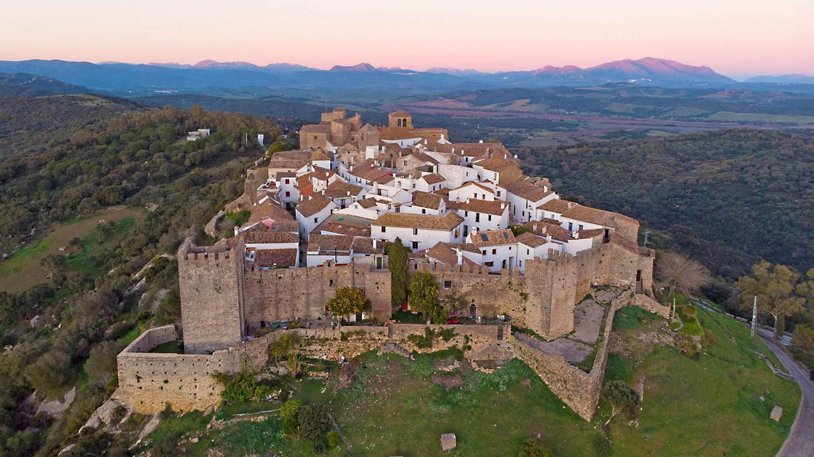
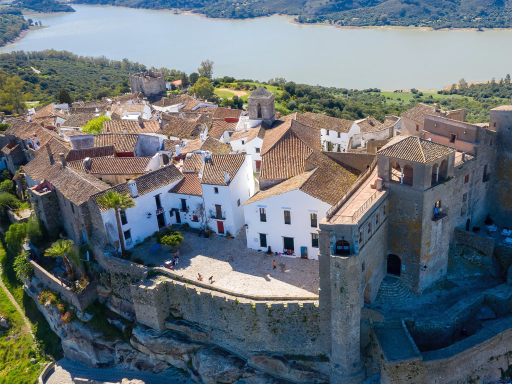
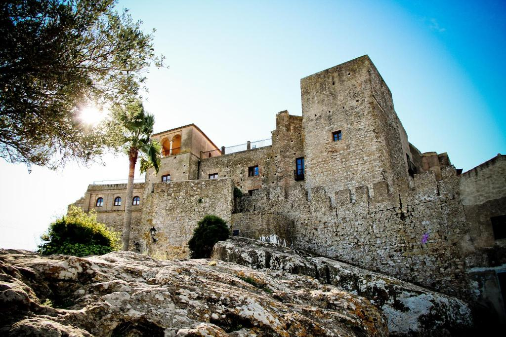
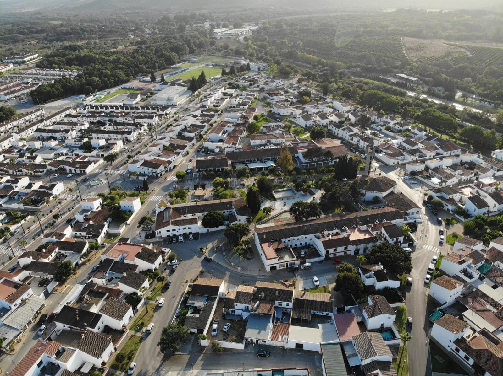

Castellar de la Frontera es un municipio español situado en la provincia de Cádiz, en la comunidad autónoma de Andalucía. Forma parte de la comarca del Campo de Gibraltar. Limita con los municipios de San Roque, San Martín del Tesorillo, Jimena de la Frontera, Los Barrios y Alcalá de los Gazules, en el parque natural de los Alcornocales, en la llamada Ruta del Toro. El municipio cuenta con tres núcleos de población, que son Castellar Viejo (conocido coloquialmente como El Castillo), Castellar Nuevo y La Almoraima. El pueblo viejo fue declarado Monumento Histórico Artístico en 1963. Castellar es económicamente fructífero por el descorche de los chaparros de la zona. La temperatura es cálida, debido a la brisa mediterránea.
Desde el año 2019 Castellar pasa a formar parte de la asociación Los Pueblos Más Bonitos de España gracias al conjunto del Castillo de Castellar o Castellar Viejo.
Castellar es popular por su castillo medieval, un destacado atractivo turístico.
   